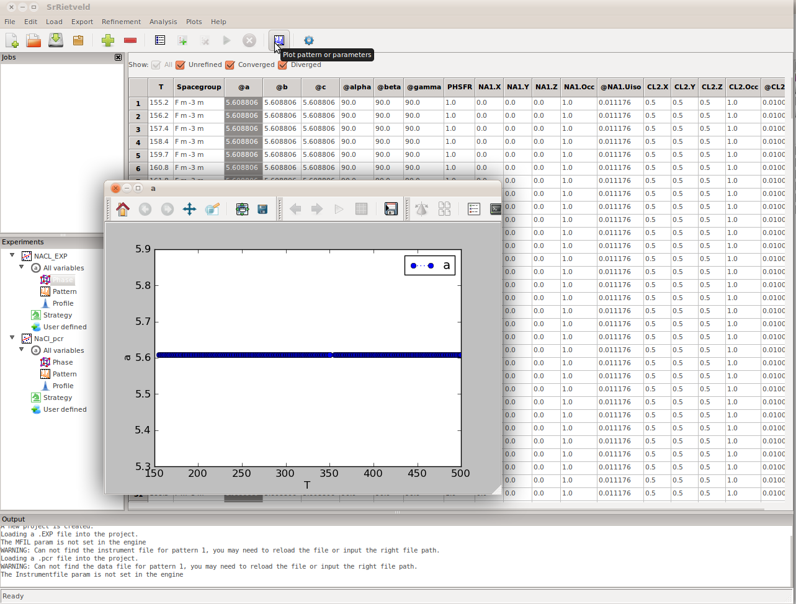
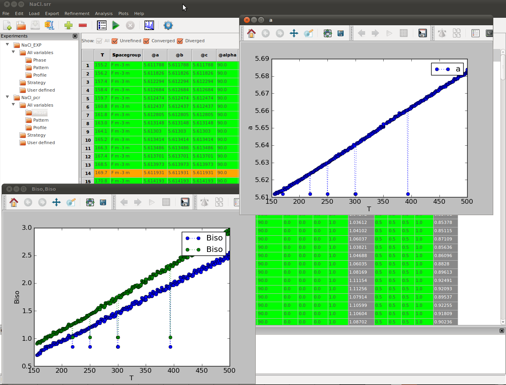
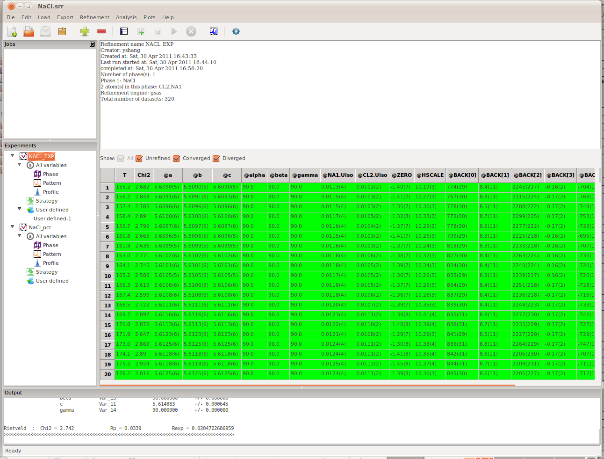
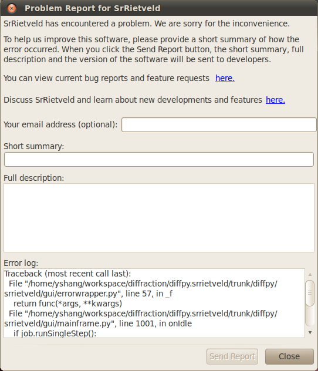

Tutorial and Example¶
This tutorial contains a guide for users to complete an example Rietveld parametric refinement with SrRietveld, as well as other major functionalities in SrRietveld software.
Example¶
The data files for this example can be downloaded from here.
Experiment Data¶
Sample: NaCl (sodium chloride) from Puratronic® (99.999%, 5N grade), contained in a 1 mm diameter Kapton tube mounted perpendicular to the synchrotron beam.
Beamline: 11-ID-B at Advanced Photon Source (APS) at Argonne National Laboratory (ANL). The beam energy is 58keV and x-ray wavelength of 0.21281Å.
Temperature ramping: The temperature was ramped continuously from 155.2 K to 500 K at a speed of 3 K/min.
Instruments: The sample was cooled using a Oxford cryostream cooler. The data were collected on a 2D Perkin-Elmer amorphous silicon detector mounted 128.6mm behind the sample and perpendicular to the beam.
Create the Example Folder¶
We recommend the users to create a new working directory and work on this example within this new folder.
For Windows Users¶
Create a new folder on your hard drive. And put the downloaded example package into the newly created folder. Unzip the package.
For Linux/Unix Users¶
Linux/Unix users may need to type in commands in a terminal. Examples of commands that need to be typed on the command line are shown boxed in bold like:
this
It should be possible to cut and paste them from the documentation into the command prompt to save you time. Text in angle brackets should be replaced with the value relevant to your case.
Begin by creating your working directory:
mkdir path/to/my/working/directory
The downloaded package is in the form of a zipped archive file. Save the zip file in your working directory. It should be possible to do this from the browser by right clicking on the link and browsing to the right directory. Go to the working directory:
cd path/to/my/working/directory
and unpack the zip file:
unzip srrietveld-examples.zip
This should create a directory tree with all of the example data: NaCl_RAPDF_example
Note
After the zip file just downloaded is extracted, the contents of the NaCl_RAPDF_example folder can be read as following,
Data - a directory that contains all the raw data in CHI format files
NaCl.srr - a HDF5 format binary project file contains the refinement setup and results of this example. This example project contains two experiments, one is refined with GSAS as the refinement engine and the other is refined with FullProf. This is created by SrRietveld and can, in turn, be read by SrRietveld. You will create this file when you do the tutorial. This is provided by way of a solution to the problem. You can check your project file against this one.
NaCl.EXP - the refinement setup file for the GSAS engine. This file can be created or edited using programs such as EXPGUI.
NaCl.pcr - the refinement setup file for the FullProf engine. This file can be created or edited using programs such as WinPLOTR.
Start SrRietveld GUI¶
Once the SrRietveld program is properly setup and the example files are downloaded, the user can start SrRietveld to run the examples. On Windows, SrRietveld can be started by clicking the quick link icon on the desktop or in program list.
To start SrRietveld in Linux/Unix, type on the command line:
srrietveld
If the system cannot find the srrietveld command, the system PATH environment variable may not be set up correctly. Please go back to the installation section of SrRietveld, and check if the script path is added to the system PATH variable.
Note
SrRietveld is a cross platform application, its Graphical User Interface looks and behaves the same on different operating systems. Details about the GUI layout can be found here.

Layout of the SrRietveld main window. There are three main panels. On the left is the “Experiments” panel, the role of the main panel on the right is context sensitive, it changes depending on what is selected in the experiments panel, but it will be used for editing and controlling refinements, and viewing numerical results. The bottom panel is the “Output” panel that shows outputs from SrRietveld engines as they run. At the top is a toolbar and a number of drop-down lists. The layout of the GUI can be reconfigured by sliding boundaries between panels. Panels can also be undocked and redocked in a different arrangement by grabbing the top of the panel by holding down the left mouse button and dragging the mouse.
Creating a Simple Project Using a Preexisting EXP/PCR File¶
Each time you open SrRietveld you are working on a single project. You can open an existing project or start a new project. Here we will start a new project by clicking on File->New project. When SrRietveld starts, a new empty project will be loaded in the work place automatically.
Within a project we can create refinements, which may contain a series of related fit s. Each fit may contain one or more phases and one or more histogram files. In conventional Rietveld refinement jobs, users usually work on one fit each refinement.
SrRietveld uses an EXP (for GSAS refinement) or PCR (for FullProf refinement) as template to create a refinement. The same settings, including the refinement strategy (see here) will be applied to all fit s in a refinement.
In the current example we have a series of 320 NaCl data-sets collected as a function of temperature. We are going to create an project, which contains a GSAS refinement and FullProf refinement. The refinements will be sequentially refined with corresponding engine.
To add a new refinement to the project, one can click on the Add new refinement icon on the toolbar, or File->New fit... on the menu bar, or right click on an empty area on the experiments panel.
A file dialog will pop up. Then navigate in the file dialog to the NaCl example folder and select NaCl.EXP.
Note
It is possible to override this step and create a new project with a new experiment directly by typing at the command line:
srrietveld NaCl.EXP
or
srrietveld NaCl.pcr
This will launch SrRietveld GUI with the experiment pre-created provided the NaCl.EXP file is present in the current directory.
To learn how to run SrRietveld from command line, please see the instructions here.
Note
Currently, users need to use GSAS (EXPGUI) or FullProf (WinPLOTR) to create the EXP / PCR setup files to create a new experiment in SrRietveld. Users can change the initial values of the refinement. But can not alter the number of phases or number of atoms specified in the EXP/PCR files.
The Setup Panels and Strategy Editor¶
After the EXP or PCR file has been loaded you will see a list of icons in the Experiments panel (left panel). The refinement parameters are categorized into different folders. (Figure). Users can navigate through the icons, the values of contained parameters will show to the right panel.
NaCl_EXP – the name of the refinement
All variables – all refinement setting parameters
Phase – The phase information, such as the lattice parameters, phase name, atoms, etc.
Patterns – The histogram file information, such as the data file path, instrument file path, incident spectrum data file, etc.
Profile – The setup parameter for the profile, such as the scale factor, zero shift, etc.
Strategy – The strategy setup interface. (see here)
User defined – user created category.
Right click on the icons will trigger a context menu, which provides additional functionalities.
Note
User can define their own category icon under the User defined. Just right click on the User defined icon, click Add child
Load Data¶
Next the data will be loaded into the refinement. First, select the refinement on the experiment panel (left panel), the click the Load the data to a refinement icon. A file dialog will open. After the user selected the data file or data list information file from the file dialog, the
Note
User can also use the Ctrl+L shortcut or by clicking Load->Data to open the dialog.
There are two schemes to load a sequence of data into the refinement:
- User can directly select the data files to load. An index will be automatically generated for the list.
- To associate the list of data files with the environment variables, user can prepare a INFO file, which will contain the list of environment variable values and the relative paths to the INFO file. User can choose this INFO file and SrRietveld will load the data file specified.
In this example, select the NaCl_All.info file in the directory NaCl_RAPDF_example/Data/, The list of data files and the temperature will be listed in a dialog before load into the refinement (Figure).

The load data dialogue box. This is obtained by making an experiment active by selecting the main experiment tab (in this case it is called “NaCl”), then clicking on the Load drop-down menu and selecting data. We have browsed to the directory containing the data and selected the NaCl.info file that contains a list of data-files and the temperature at which the data were measured. In this figure all the files are shown selected, so when “replace” button is clicked these datasets will be loaded into this experiment (replacing any data-files that were associated with the experiment). Only the selected files will be loaded.
Note
By default, all the files in the .info are selected but this can be changed using normal selection methods (select a single file, select multiples files by holding down Ctrl button and clicking files, or select ranges of files by holding down shift and clicking the file at each end of the range).
The NaCl_All.info file is a multi column text file, which contains the datafile names and the corresponding temperature on which the data were collected. After the sequential refinement data are loaded, select Pattern in the Experiments panel. We see that it contains a row of meta data for each loaded dataset (Figure). The names of the files that correspond to each row are in the Datafile column. Similarly, the Instrumentfile contains the instrument file path, and the MFIL column contains the incident spectrum data file path (for GSAS refinements).
Details about the data file list file (.info file) format can be found here.
Note
In the case of multi-bank data, data file for each bank has to be specified. If a data file for a bank is missing, the data file path from the previous bank will be copied, otherwise, if more data files are listed than the number of the banks, the extra data file will be ignored.

The Pattern setup panel. We can see which data-files, or diffraction “patterns”, are associated with the experiment by clicking on the pattern node in the experiment and looking in the main panel. Also apparent in this panel are other parameters in the fits that are associated with the pattern such as background parameters and the instrument parameter file that will be used with the refinement.
Refinement Strategy¶
Note
For more details on strategy in SrRietveld, please see here.
Now we have loaded a EXP file and created an “refinement” and we have associated a series of data-sets to this experiment. We are now ready to set up the refinement strategy. SrRietveld uses strategies to automate refinements in place of the extensive human interaction necessary with GSAS or FullProf.
The strategy is a sequence of refinements on one data set. To obtain convergence, usually fewer parameters will be turned on at the beginning steps of the strategy and more parameters will be turned on at the following steps. At the last step all parameters to be refined will be turned on. This process can improve the convergence of the refinement on one data set when the starting value is not close enough to the results. While in most cases, the user will have a refinement setup file with good results ready to establish a project in SrRietveld, the strategy steps will be turned off by default. The user can also let the program to automatically turn on the strategy steps when the refinement diverges on one dataset. Therefore when the refinement diverges, the software will rerun the refinement with all strategy steps turned on on the same dataset. If the second trial fails again, the software will mark the bad dataset and continue to the next.
The turned on parameter will show a prefix @ in its label. To add a parameter to a step of strategy, user can select that column, and right click on the column label, hover the mouse over Turn on parameters submenu, user can remove or add this parameter to the listed steps.
Select the Strategy icon on the NaCl experiment in the Experiments panel. The SrRietveld default strategy can be seen in the strategy panel to the right. We will use the default strategy so there is no need to edit it. Users can edit the strategy in the strategy editor panel. The user defined strategy can also be exported to local disk as a text file, which can be loaded into another experiment with same refinement engine.
Note
SrRietveld sets up a default strategy for each newly created experiment. For details of how to edit the strategy, please go here
Real Time Plotting¶
Now we will open the real time plot windows so we can follow the refinement. When the refinement starts, all the fits in the experiment will be carried out. We can choose to follow any refined parameter, or the goodness-of-fit R-factors, as a function of the fit number or, if as here we have associated a parameter such as temperature with each fit, we can plot the refined parameter vs. temperature. We would like to follow the T-dependence of the a-lattice parameter. To do this we need to select this parameter column. Either select the AllVariables or Phase node in the NaCl experiment in the Experiments. The main panel will then show either all the variables in a huge table, or just the parameters associated with the structural model of the phase. All the variables associated with a single fit are in a single column of the table.
Scroll until you find the parameter of interest and select the column by clicking on the top of the column. Then click Tools -> Plot from the Menu Bar, or click the plot icon in the Tool Bar. A plot window will pop up (Figure).
You can select more than one parameter to plot by holding down Ctrl and selecting more parameters. If two parameters have similar values they will look good in one plot window, which will auto-scale based on the refined values. You can open as many plot windows as you like and so it is also possible to follow multiple parameters with different values in multiple plot windows.

{kind=link}
A plot window has been opened by selecting the column corresponding to the parameter, in this case it is the a-lattice parameter then clicking the plot icon on the tool bar. It looks flat because the refinements have not started and the initial values for this parameter is the same for each fit at each temperature.
Note
Since the refinement has not started yet, the curve in the plot window is a straight line. However, The shape of the curve will be updated in real time after the refinement starts.
Add a job to the job list¶

To add a job to the job list of the project, one has to select a refinement in the Experiment panel, and select the datasets to be included in the job from the right panel (grid panel). Then click on the menu item Experiment->Add job. The job will be added and shown in the Job panel list. To be noted, If no dataset is selected in the grid panel when adding the job, all datasets in the selected refinement will be included in the job.
A detailed instruction on the Job panel can be found in :ref:here <the_job_panel>.
Start the Sequential Refinement¶
To start the refinement jobs listed in the Job panel, simply click on the Start a refinement button in the tool bar. SrRietveld will automatically run the refinement jobs in the job panel from the top of the list. Because of the large number of fits, the refinement will take some time to complete. You can take a break and have a coffee and come back later to view the results, or you can interrupt the fit and restart it with fewer data-sets loaded (see bellow).
Note
During a refinement, SrRietveld switches to the strategy view, with the active refinement step highlighted, output messages from the engine will be printed in the output panel, and the parameter values in the strategy view and the plot window will be updated in real time (Figure). The grid data view above the strategy panel will also be updated in real time during the refinement.

SrRietveld is running
User can also refine certain fits in the list. Simply select the rows in the data grid view on the right panel, and start the refinement by right clicking on the row labels, then SrRietveld will refine only the selected fits.
Handling Divergent Refinements¶
FullProf has difficulty converging the fit at certain temperatures, which would require considerable human intervention if FullProf were being used without SrRietveld. However SrRietveld can handle the divergence during sequential refinement. When the refinement on certain temperature diverges, SrRietveld will skip the current dataset and continue on the refinement on the next refinement. The diverged datasets will be highlighted in the result grid view, as can be seen in the figure bellow. The results shown in the figure are saved in the project file NaCl_step_over.srr file under the example folder.
To converge the diverged fits you can try and rerun the refinements. Each data-set has a status associated with it so that SrRietveld knows if it is not-run, converged, or not converged. The refinement can be rerun on all datasets or just not-run and not-converged datasets. If necessary you can change the starting parameter values or the refinement strategy by editing in the SrRietveld window to help convergence.

{kind=link}
The SrRietveld software can handle the diverged refinement on datasets during sequential refinements. The above figure shows the results of the sequential refinements with a different version of FullProf which produced some diverged refinements on some datasets, which is highlighted in the grid view. The step-over example results are saved in NaCl_step_back.srr in the example folder.
Note
The results shown above are obtained with FullProf v4.80. We also found that different versions of FullProf may produce different refinement results on our testing with the same settings. So if you get any results different from what are showing above, a different version number may be the reason.
Viewing the Results¶
After the refinements are complete, to view the results, click on the highest node in the Experiments panel (NaCl_EXP in our example). The results, consisting of all the refined parameters and their standard deviations, will appear in the right panel (Figure). It can be seen that there are several checkboxes, above the grid data view, All, Unrefined, Converged, and Diverged. Users can use these checkboxes to filter the refinement to be shown in the grid bellow.

{kind=link}
The result panel
Note
In the result panel the uncertainties will show when possible. The uncertainties will not be displayed in other panels.
- To plot the result values against the environment parameters, select the entire column by click on the label, click on Tools->Plot or click on the plot button on the tool bar
- To plot two result values against each other, select the two columns, click on Tools->Plot XY
- To plot the refinement history of a result value, switch to the result panel (click NaCl node on the left Experiments panel), select the entire column in the result panel to the right, click on Tools->Plot history
- To plot the current pattern of the diffraction data, select the NaCl node on the Experiments panel, click on Tools->Plot or click on the plot button on the tool bar
Note
As can be seen in the plot window interface, the functionality of SrRietveld plot window is extended (Figure). The details about the extended plot window in SrRietveld can be found in here.

The extended plot window
Setup and Run the FullProf Refinement with SrRietveld¶
User can load more than one refinements in a project. As the GSAS refinement has already completed on the NaCl data, users can load the FullProf refinement into the project. Simply click Add new refinement... button in the toolbar and select the PCR file in the example folder. One can load the data and start the refinement similar as shown above.
After the Refinement¶
SrRietveld provides convenient access to the refinement data and results.
Export the data view to CSV file¶
The values in the grid data view can be exported to CSV file. Users can click the menu button Export->CSV. A dialog will be popped up for the user to input the csv file name. If no cell is selected in the grid view, the whole view will be exported to the csv file. The user can also select the cell in the grid data view and export. In this case, the minimum block in the data view containing the selected cells will be exported.
Load the data view from a text data file¶
If users would like to change the values in the grid view, a text data file in multi column or CSV format can be loaded into the grid. By clicking Menu->Load->Import text data, a preview dialog will show. User can choose the format of the file, or make any changed on values on cells, before importing these data into the grid view. .. _fg_import_text_data:

The extended plot window
Export the refinement setup files¶
User can also export the refinement results to the EXP or pcr files which are recognizable by GSAS and FullProf, respectively. User can select the single refinement in the grid data view, from which the data will be exported, and then select the Export->EXP/pcr and a dialog will pop up. Users can input the descriptive part of the file name, the software will prefix the user given name to distinguish the setup file exported from different refinements in a sequence.
Export the distance and angle information from the refinement¶
Note
The DISAGL file exportation is only available for refinement with GSAS engine.
Similar to the refinement setup files, the distance and angle information can be exported to DISAGL files. User can select the single refinement in the grid data view, from which the data will be exported, and then select the Export->DISAGL and a dialog will pop up. Users can input the descriptive part of the file name, the software will prefix the user given name to distinguish the setup file exported from different refinements in a sequence.
Re-running the Refinement¶
Depending on the results, one might need to re-run the refinement using different initial values. To change the initial values, select the node that you’re interested in from the Experiments panel, then double click the cell whose value you want to change in the right panel, edit the value, and then hit Enter to update the value. Once all changes have been made, reset the fits status via Refinement->Reset, then re-run the refinement as detailed above.
Additionally, it is also possible to update the initial values using GSAS or FullProf and then reloading the setup file in SrRietveld.
Stop the Sequential Refinement¶
While SrRietveld is running refinements on sequential data, the sequential refinement can be terminated at any time by clicking the Stop button in the tool bar (also available in the menu Run->stop), as shown in the Figure bellow.

Stop the sequential refinement by clicking the button in tool bar
Please be noted that the Stop button will only be activated when the sequential refinement is running and the top node of the experiment on the left panel is selected (NaCl in this case). After stopped the sequential refinement can be restarted by click the Start a refinement button in tool bar or Run->Sequential in the menu.
Note
While the stop button is clicked, the SrRietveld will record this event and stop after finish the refinement on current dataset.
Saving and Loading Project Files¶
The user can save the current settings by click on File->Save Project..., results, and strategy into a stand-alone binary file in HDF5 format, with the file extension .SRR. This file can be loaded to analyze the result or continue refinement.
Note
The refinement strategy information will be also saved in the project binary file. The data file and instrument file paths will be saved in the project binary file.
In the example folder there are two HDF5 project files provided.
- NaCl.srr – the project file with FullProf as refinement engine
To open an project, click File->Open project... in menu or directly click on the open file icon in tool bar, then just choose the data file to load from the opened file dialog.
These files contains the complete refinement setup information and refinement results for two different refinement engines. User can view the results and settings saved in the .SRR file via.
Archive the Project File and Source Files in zip¶
It is possible to archive the project file and source files in a zip file, which is much smaller thus convenient to handle via internet. To archive the current project, the user can click on the Archive project in zip button in toolbar. Then a file dialog will show, by which user can select the path and file name of the zip file.
Bug Report and User Feedback¶
Bugs Bite Me!¶
Though efforts are made to make SrRietveld program bug-free, different work environments, unexpected conditions, or various platforms and hardwares may cause errors while using this program. In this case, if you can report the error message back to the development group, it will help us in improvement on SrRietveld greatly. Users can submit the bug reports to the developers mailing list in Google group: http://groups.google.com/group/srrietveld-dev.
For your convenience, when the program encounters an error, a report window will pop up, as can be seen in the following figure.

{kind=link}
The bug report window when the program encuonters an error.
Note
Though the user’s email address is optional in the error report form, we encourage the user to provide this information, so that the developers can contact the user for more details of the reported error.
User Feedback and Community¶
The opinions from SrRietveld users are important to us. The user community can also be used to solve issues in various use cases. If you have any questions, suggestions, feature request, or just some ideas to share with us, please share with us in the SrRietveld user online community in Google Groups: http://groups.google.com/group/srrietveld-users.